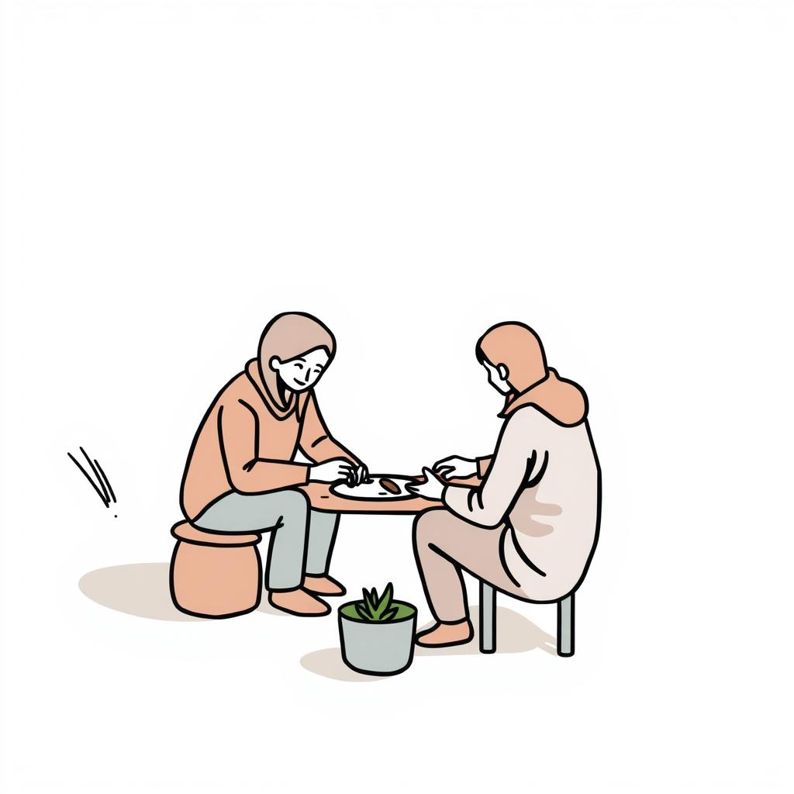
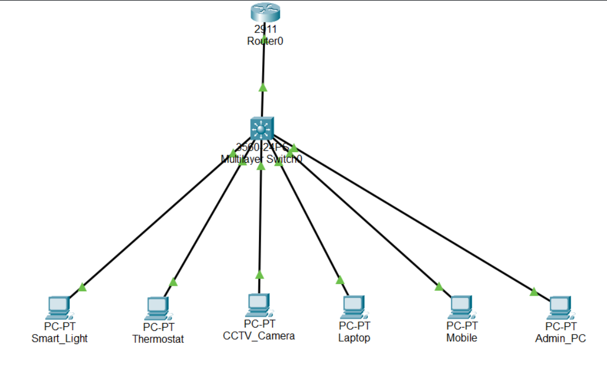
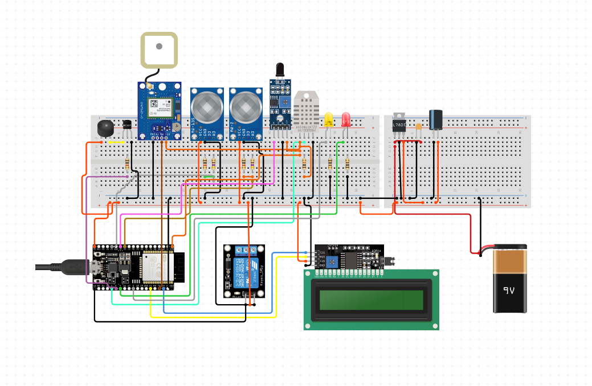

Projects

Barter: A Peer-to-Peer Skill Exchange Platform (Jan 25- May 25)
TechStack: React | Node.js | MongoDB | ML
- Skill-Based Matchmaking: Connects users based on what they can teach and want to learn, enabling a fair skill exchange.
- Provides chat, resource sharing, and session tracking to facilitate seamless peer-to-peer learning.
- Community-Driven & Free: Removes monetary barriers, fostering a global community where knowledge is exchanged.

Smart Home VLAN Simulation (May 25-Jun 25)
TechStack: Cisco Packet Tracer
- Implemented a smart home network simulation using Cisco Packet Tracer with VLAN segmentation and interVLAN routing.
- Configured static IP addressing, VLANs, and SVI on a multilayer switch for secure traffic isolation.
- Demonstrated network topology design, IP subnetting, and Layer 2/3 device configuration.

IoT Based Smart Industrial Safety System (Jan 25- May 25)
TechStack: Hardware: ESP32 | Flame, Gas, Temp, Smoke Sensors | Buzzer | LED
Software: Firebase | Blynk | Twilio API | Arduino IDE
- Hazard Detection: Uses sensors with ESP32 to monitor fire, gas, temperature, and smoke in real time.
- Instant Alerts: Triggers buzzer, LED, and updates Firebase and Blynk for live alerts.
- Emergency Response: Sends alerts to fire stations/hospitals via Twilio for quick action.
Secure mail server deployment with malware protection (Nov 23- Mar 24)
TechStack: Postfix | Dovecot | ClamAV
- Built and deployed a secure Linux-based email server using Postfix and Dovecot with spam filtering, leveraging TCP/IP protocols
- Implemented authentication via SPF, DKIM, and DMARC to prevent spoofing/phishing.
- Integrated ClamAV for real-time malware scanning, improving system reliability.